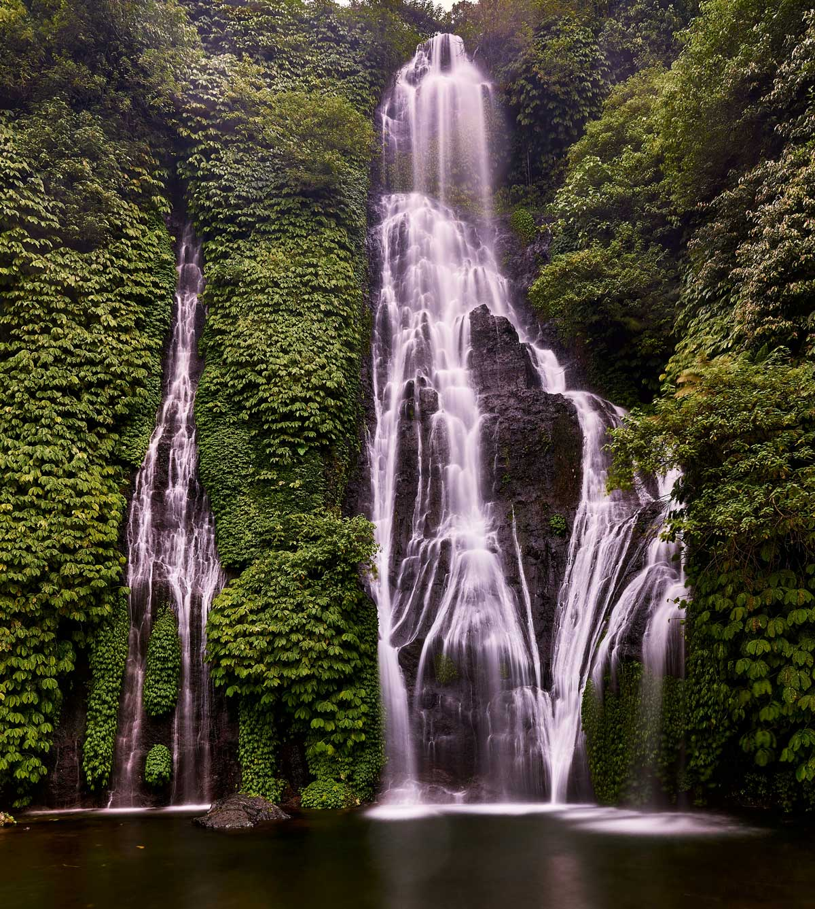

What You'll Do

Lovina Sunrise Dolphin Cruise
We leave Ubud in the dark to reach Lovina's calm north-coast water at first light. Climb aboard a traditional jukung boat and glide out as pods of wild dolphins surface and play around you, the sunrise glowing behind the mountains. An only-in-the-morning experience.
Banjar Hot Spring
Back on land, ease into the sacred Banjar hot springs - warm, sulphur-rich water pouring from carved stone dragons into jungle-fringed bathing pools. The perfect way to warm up after the boat and loosen up before the trek.

Sekumpul Waterfall
Often called the most beautiful waterfall in Bali - a cluster of tall cascades pouring into a green jungle gorge. It's a real trek down and back up through the valley, but standing at the base of Sekumpul is a reward few visitors ever see. Moderate fitness needed.